조경산업기사 (2014-05-25 기출문제)
1과목: 조경계획 및 설계
1. 조경설계기준 상의 기본설계시 「녹지」와 관련된 설명으로 바르지 않은 것은?
- 녹지생태계 보전을 위하여 자생식물 및 향토수종을 적극 도입하며, 환경 친화적인 재료를 사용한다.
- 녹도의 폭원은 5~10m를 표준으로 하며, 주변의 가로경관 요소로부터 독립된 안전성, 쾌적성을 갖도록 설계한다.
- 완충녹지는 공해발생지역이나 오염원, 시각적으로 부정적인 영향을 주는 시설을 차폐 또는 은폐시킬 수 있도록 설계한다.
- 녹지 내부가 생물서식공간의 역할을 수행할 수 있고, 주변 자연환경을 고려하여 생태네트워크가 형성될 수 있도록 설계한다.
(정답률: 64%)

2. 원이 내접하는 정육각형 그리기에서 작도법이 잘못 설명 된 것은 무엇인가?
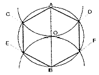
- 직선 AOB(원의 중심선)를 그린다.
- 원주와의 교점 C, D 및 E, F를 구한다.
- A와 B를 중심으로 임의로 원호를 그린다.
- 원주와의 교점을 순차직선으로 연결하면 원에 내접하는 정육각형이 된다.
(정답률: 78%)
3. 다음 중 비대칭 효과를 설명으로 바르지 않은 것은?
- 비어있는 것 같은 공간이 자주 생길 수 있다.
- 형태상으로는 불균형이지만 시각상의 힘의 정돈에 의하여 균형이 잡히는 것이다.
- 보는 사람에게 심리적 안정감을 주는 변화 있는 형태로서 개성적인 감정을 느끼게 한다.
- 균형의 정형적인 형식이며, 질서를 주는 방법이 용이하여 통일감을 표현하기 쉽다.
(정답률: 76%)
4. 경관의 요소를 변화시키는데 가변인자가 될 수 없는 것은 무엇인가?
- 빛(Light), 계절(Season)
- 운동(Motion), 거리(Distance)
- 축(Axis), 연속(Sequence)
- 규모(Scale), 관찰위치(Observation Po sition)
(정답률: 74%)
5. 옥외공간에서 앉을 수 있는 요소로서 구성 가능한 부지 구조물이 아닌 것은 무엇인가?
- 볼라드(bollard)
- 벽(wall)
- 플랜터(planter)
- 험프(hump)
(정답률: 70%)
6. 판형재의 치수표시에서 강관의 표시방법으로 옳은 것은?
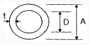
- øA×t
- øD×t
- d×t
- A×t
(정답률: 74%)
7. 도로설계시 운전자가 속도에 따른 물체를 지각하는 과정으로 맞는 것은?
- 반응(reaction)→지각(perception)→판단(judgement)
- 지각(perception)→판단(judgement)→반응(reaction)
- 판단(judgement)→지각(perception)→반응(reaction)
- 지각(perception)→반응(reaction)→판단(judgement)
(정답률: 77%)
8. 자연성이 강한 레크리에이션 공간의 시설물 배치계획 기준으로 올바른 것은?
- 시설물의 형태, 재료, 색채 등은 가능하면 주변경관과 대비를 이루도록 하여 이용자의 시선을 끌도록 한다.
- 구조물의 평면이 장방형인 경우에는 장변이 등고선에 수직이 되도록 배치한다.
- 유사한 기능의 시설물들은 한 곳에 모아서 배치하기 보다는 분산 배치하여 이용자의 편의를 도모한다.
- 시설물의 평면은 행위의 종류, 기능, 이용패턴에 따라서 결정되며, 시설물의 안전을 위한 구조도 동시에 고려되어야 한다.
(정답률: 70%)
9. 지상피복조건에 따른 알베도의 값이 틀리게 연결된 것은 무엇인가?
- 바다 : 0.6~0.8
- 검은 흙 : 0.⑤ ~ 0.15
- 산림 : 0.10 ~ 0.20
- 초지 : 0.15 ~ 0.25
(정답률: 72%)
10. 자연공원법의 「공원자연환경지구」에 대한 행위기준을 설명한 것으로 바르지 않은 것은?
- 대통령령으로 정하는 기준에 따른 공원시설의 설치 및 공원사업
- 대통령령으로 정하는 허용기준 범위에서의 농지 또는 초지(草地) 조성행위 및 그 부대시설의 설치
- 환경오염을 일으키지 아니하는 가내공업(家內工業) 시설의 설치
- 대통령령으로 정하는 섬지역에 거주하는 주민이 사망한 경우 「장사 등에 관한 법률」에 따른 개인묘지의 설치
(정답률: 69%)
11. 린치(K. Lynch)의 도시 경관 5가지 요소 중 ‘path'의 설명이 잘못된 것은 무엇인가?
- 연속성과 방향성이 있다.
- 연속성의 강조는 가로수의 식재, 건물 전면(前面 facade), 건물의 통일 등에서 얻을 수 있다.
- 거리감이 있어야 하는데 랜드마아크(landmark)나 노드(node) 등이 일련의 시각적인 연속성에서 얻을 수 있다.
- 특별한 용도 혹은 활동을 집결시키지 못한다.
(정답률: 76%)
12. 국토교통부장관, 시ㆍ도지사 또는 대도시 시장은 관련법에 따라 도시ㆍ군 관리계획결정으로 경관지구ㆍ미관지구ㆍ고도지구ㆍ보존지구ㆍ시설보호지구ㆍ취락지구 및 개발진흥지구를 세분하여 지정할 수 있다. 다음 중 경관지구의 세분화가 아닌 것은 무엇인가?
- 자연경관지구
- 수변경관지구
- 생태경관지구
- 시가지경관지구
(정답률: 50%)
13. 중국 진(晉)나라 왕희지의 유상곡수연(流觴曲水宴)의 풍류 문화가 나타난 것은 무엇인가?
- 소상팔경
- 낙양명원기
- 난정서
- 원야
(정답률: 55%)
14. 묘지정원(Cemetery garden)에 관한 설명으로 올바르지 않은 것은?
- 고대 이집트 정원 중의 하나
- 시누헤 이야기(Tales of sinuhe)
- 사자(死者)의 정원
- 장미 이야기
(정답률: 72%)
15. 중세 초기의 수도원(修道院)안에서 볼 수 있는 전형적인 중정은 무엇인가?
- 페리스틸리움(Peristylium)
- 아트리움(Atrium)
- 클로이스터(Cloister)
- 지스터스(Xystus)
(정답률: 65%)
16. 조선시대 궁궐정원에서 볼 수 없는 것은 무엇인가?
- 색모래와 정자수(整姿樹)
- 방지원도(方池圓島)와 방지방도
- 십장생(十長生)과 화초담
- 사괴석(四塊石)과 수복무늬
(정답률: 75%)
17. 조선시대 사대부 주택정원 형태가 가장 잘 보존되어 있는 곳은 어디인가?
- 소쇄원
- 선교장
- 다산초당
- 세연정
(정답률: 57%)
18. 작정기에 쓰여진 “못(池)도 없고 유수(遺水)도 없는 곳에 돌(石)을 세우는 것”을 뜻하는 일본의 정원수법은 무엇인가?
- 정토식
- 수미산식
- 곡수식
- 고산수식
(정답률: 91%)
19. 미국의 대표적 모더니즘 작가로 ‘초아트 장원(Mabel Choate's Estate)'과 관계된 사람은 누구인가?
- 사이먼즈(Simonds)
- 스틸(Steel)
- 에크보(Eckbo)
- 카일리(Kiley)
(정답률: 65%)
20. 조선 왕실의 수목과 능원의 잔디를 인위적으로 지배하여 식재했던 곳은 어디인가?
- 모화관
- 순천관
- 선공감
- 준천사
(정답률: 64%)
2과목: 조경식재
21. 다음 중 산울타리 조성에 가장 많이 쓰이는 수종은 무엇인가?
- Acer pictum subsp. mono Ohashi
- Platanus orientalis L.
- Poncirus trifoliata Raf.
- Aesculus turbinata Blume
(정답률: 44%)
22. 다음 중 수목의 분류상 만경목(蔓莖木)에 해당하지 않는 것은 무엇인가?
- campsis grandifolia K.Schum.
- Celastrus orbiculatus Thunb.
- Stauntonia hexaphylla Decne.
- Rhodotypos scandens Makino
(정답률: 42%)
23. 운반 중 뿌리와 수형이 손상되지 않도록 실시하는 보호조치로 올바르지 않은 것은?
- 뿌리분의 보토를 철저히 한다.
- 수목과 접촉하는 고형부에는 완충재를 삽입한다.
- 운반 중 바람에 의한 증상을 억제하며 강우로 인한 뿌리분의 토양유실을 방지하기 위하여 덮개를 씌우는 등 조치를 취한다.
- 차량의 적재용량과 수목의 무게 및 부피에 따라 이중적재 등의 효율적 방법과 적정 수량만을 적재한다.
(정답률: 86%)
24. 화살나무(Euonymus alatus)에 대한 설명으로 바르지 않은 것은?
- 잎은 대생하며, 엽병이 짧다.
- 열매는 삭과로 적색으로 익는다.
- 꽃은 적색으로 뿌리는 심근성이다.
- 건조에 매우 강하다.
(정답률: 63%)
25. 오래된 아래가지는 밑으로 쳐져서 원추형 수관을 이루며 수피는 회갈색인 수종은 무엇인가?
- Zelkova serrata Makino
- Ginkgo biloba L.
- Picea abies H.Karst.
- Pinus densiflora f. erecta Uyeki
(정답률: 41%)
26. 다음 중 결핍증상이 오래된 잎에서부터 시작되고 줄기가 가늘고 잎이 작아지며 잎 전체가 황록색이 되게 하는 원소는 무엇인가?
- Fe
- N
- K
- Ca
(정답률: 66%)
27. 토양의 비옥도에 따른 분류 중 비옥한 토양을 좋아하는 수종만으로 구성된 것은 무엇인가?
- 향나무, 소나무
- 느티나무, 오동나무
- 자작나무, 중국단풍
- 등나무, 능수버들
(정답률: 56%)
28. 다음은 온대중부지역의 천이단계를 나타낸 것이다. ( )안의 단계에 들어갈 적합한 수종은 무엇인가?
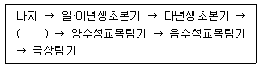
- 찔레나무
- 신갈나무
- 소나무
- 서어나무
(정답률: 71%)
29. 좁은 공간의 면적을 넓게 보이려면 시각자로부터 멀어져 가면서 어떤 방법으로 식재하여야 하는가?
- 거친 질감으로부터 점점 고운 질감으로 식재
- 거친 질감과 고운 질감을 교대로 식재
- 고운 질감으로부터 점점 거친 질감으로 식재
- 중간질감→고운질감→거친질감으로 식재
(정답률: 68%)
30. 근원 직경이 10cm인 수목을 4배 보통분으로 뜰 때 뿌리분의 깊이로 가장 적합한 것은 무엇인가?
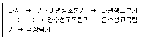
- 10~30cm
- 30~50cm
- 50~70cm
- 70~90cm
(정답률: 74%)
31. 광선과 식물의 관계 설명으로 바르지 않은 것은?
- 식물이 광합성에 이용할 수 있는 가시광선영역을 광합성보상광이라 한다.
- 자외선의 경우, 잎 각피층에 의해 거의 흡수된다.
- 활엽수는 침엽수에 비해 700~1000mm 파장의 근적외선을 더 많이 반사시킨다.
- 광량은 일반적으로 광도(light intensity)로 표시하며 사용하는 단위는 촉광(foot candle) 또는 럭스(lx)등이 있다.
(정답률: 54%)
32. 석유화학단지 내에서 식재설계를 할 때 가장 먼저 고려해야 할 공해 인자는 무엇인가?
- 조해(潮害)
- 아황산가스
- 불화수소
- 분진
(정답률: 84%)
33. 수목의 측아(側芽) 발달을 억제하여 정아우세를 유지시켜 주는 호르몬은 무엇인가?
- 옥신(auxin)
- 지베렐린(gibberellin)
- 사이토키닌(cytokinin)
- 아브시스산(abscisic acid)
(정답률: 72%)
34. 다음 설명의 ( )안에 적합한 구근류는 무엇인가?
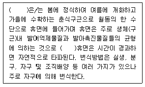
- 수선화
- 백합
- 크로커스
- 글라디올러스
(정답률: 55%)
35. 단풍색이 붉은 것으로만 구성된 것은 무엇인가?
- 때죽나무, 이팝나무
- 튤립나무, 계수나무
- 화살나무, 복자기
- 주목, 회양목
(정답률: 79%)
36. 자연풍경식 식재의 기본이 되는 식재 유형은 무엇인가?
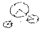
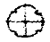
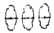
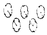
(정답률: 83%)
37. 다음 중 가지가 밑으로 처지는 수형을 가졌고 하천, 호수 등 토양수분이 많은 곳을 좋아하는 종은 무엇인가?
- Betula ermanii
- Pinus thumbergii
- Juglans mandshurica
- Salix pseudolasiogyne
(정답률: 73%)
38. 다음 중 난지형 잔디류에 속하는 것은 무엇인가?
- 버팔로그라스
- 이탈리안라이그라스
- 톨 훼스큐
- 크리핑벤트그라스
(정답률: 71%)
39. 장미과(科)의 벚나무속(屬)에 해당되지 않는 것은 무엇인가?
- 매실나무
- 모과나무
- 살구나무
- 자두나무
(정답률: 76%)
40. 꽃창포(Iris ensata var . spontanea (Makino) Nakai)에 관한 설명으로 바르지 않은 것은?
- 여러해살이 풀이다.
- 붓꽃과(科)에 해당한다.
- 산야의 습지, 부엽 등이 많이 쌓이고 비옥하며 습기가 많은 양지바른 곳에서 자란다.
- 높이 1m 가량으로 털이 있으며, 4~5월에 원줄기 또는 가지 끝에서 보라색의 꽃이 핀다.
(정답률: 53%)
3과목: 조경시공
41. 다음 지형의 체적계산법 중 단면법에 의한 계산법으로서 비교적 가장 정확한 결과를 얻을 수 있는 것은 무엇인가?
- 점고법
- 중앙단면법
- 양단면평균법
- 각주공식에 의한 방법
(정답률: 70%)
42. 강은 사용목적에 따라 조직을 변경시키는 열처리 및 가공에 의해서 성질을 개선 향상시키는 효과가 크다. 다음 중 회전하는 롤러 사이에 재료를 통과시켜 판재, 형재, 관재 등으로 성형하는 가공법은 무엇인가?
- 판금
- 불림
- 단조
- 압연
(정답률: 68%)
43. 조경수목의 흉고직경 측정방식의 설명 중 ( )안에 적합한 숫자는 무엇인가?
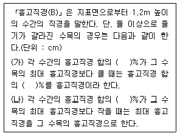
- 50
- 60
- 70
- 80
(정답률: 67%)
44. 다음 중 폴리에스테르수지(polyester resin)에 관한 설명으로 가장 부적합한 것은 무엇인가?
- 전기절연성이 우수하다.
- 내약품성이 우수하다.
- 욕조, 파이프 등에 사용된다.
- 불포화 폴리에스테르수지는 열가소성수지이다.
(정답률: 68%)
45. 물체에 단지 외곽부의 형태를 강조하기 위하여 물체 뒤에 있는 배경면을 조명하여 물체의 형태를 극적인 형태로 연출하기 위한 조명은 무엇인가?
- 산포조명
- 강조조명
- 실루엣조명
- 투시조명
(정답률: 77%)
46. 투수아스팔트콘크리트 포장 및 투수콘크리트 포장에 대한 설명으로 바르지 않은 것은?
- 공원이나 유원지의 도로, 주차장, 자전거도로, 산책로, 광장 등의 포장에 적용한다.
- 원지반토가 설계상의 것과 상이할 때 또는 상태가 나쁠 때에는 환토하여야 하며, 노상면은 깨끗하게 정리한다.
- 투수아스팔트 혼합물과 달리 온도저하가 빠른 아스팔트콘크리트 포설은 전압시의 온도관리에 신중을 기하여야 한다.
- 마무리면은 20m마다 임의의 1점에 있어서 두께 차이가 9mm 이상 되어서는 안 된다.
(정답률: 53%)
47. 다음 금속 재료 중 전성(展性, malleabi lity)이 가장 큰 것은 무엇인가?
- 알루미늄
- 은
- 철
- 니켈
(정답률: 68%)
48. 다짐용 건설기계에 해당하지 않는 것은 무엇인가?
- tire rolle
- vibro compactor
- rammer
- trencher
(정답률: 71%)
49. 네트워크 공정표의 계산방법에 관한 설명으로 바르지 않은 것은?
- 작업의 LST는 그 작업의 LFT에서 작업 소요일수를 뺀 값으로 한다.
- 완료 결합점의 EST는 0(zero)이며, 이 때의 LST값을 지정공기로 한다.
- 종료 결합점에서 들어가는 각 작업의 EFT 값 중 최대값을 계산공기로 한다.
- 개시결합점의 EST는 0(zero)이며, 각 작업의 EST, EFT는 작업흐름에 따라 계산한다.
(정답률: 60%)
50. 공사 중 사고를 미연에 방지하기 위한 안전관리 대책이 아닌 것은 무엇인가?
- 산재보험의 가입
- 안전관리 기구 구성
- 매일 현장점검
- 안전교육의 실시
(정답률: 89%)
51. 안내시설의 시공과 관련된 설명으로 바르지 않은 것은?
- 아크릴판은 KS규정에 적합한 일반용 메타크릴 수지판으로, 메타크릴산 메틸올 80% 이상을 포함하여야 한다.
- 게시판의 경우 우천 시 게시물의 보호를 위하여 불투명한 합성수지의 보호덮개를 설치해야 녹슬음을 방지하고, 글씨 상태를 유지할 수 있다.
- 글씨 및 문양표기 작업이 끝난 후에는 마감표면 상태를 정리하고 각 재료에 따른 적정한 보호양생조치를 해야 한다.
- 석재바탕 글자새김의 경우 형태와 크기는 설계도면에 의하며, 글지의 깊이는 특별히 정하지 않는 한 글자 폭에 대하여 1/2 내지 같은 치수로 하고, 글자를 새기는 순서는 글자를 스는 순서와 동일하게 한다.
(정답률: 74%)
52. 다음 중 하천 제방의 기부에 대한 보호를 위해 가장 적합한 공법이며, 비교적 유속이 빠르고 세굴이 우려되는 지역에 활용되는 것은 무엇인가?
- 격자블럭공
- 습식종자뿜어붙이기
- 돌망태공
- 지오웨브공법
(정답률: 66%)
53. 일반 콘크리트용 내부 진동기의 사용방법에 관한 설명으로 올바른 것은?
- 재진동을 할 경우에는 초결이 일어난 것을 확인한 후 실시한다.
- 진동다지기를 할 때에는 내부진동기를 하층 콘크리트 속으로 0.1m 정도 찔러 넣는다.
- 1개소당 진동시간은 다짐할 때 시멘트 페이스트가 표면 상부로부터 약간 부족한 높이까지로 한다.
- 내부진동기는 비스듬하게 찔러 넣으며, 삽입간격은 일반적으로 0.8m 이상으로 하는 것이 좋다.
(정답률: 58%)
54. 면이 네모진 돌을 수평줄눈이 부분적으로 연속되고, 세로줄눈이 일부 통하도록 쌓는 돌쌓기 방식으로 가장 적합한 것은 무엇인가?
- 허튼쌓기
- 바른층쌓기
- 허튼층쌓기
- 층지어쌓기
(정답률: 57%)
55. 연못공사에서 오버플로우(over flow)에 대한 설명 중 올바르지 않은 것은?
- 연못의 일정한 수면높이를 조절하기 위한 장치이다.
- 연못의 수질을 조절하는 장치이다.
- 가급적 이용자의 눈에 뜨이지 않도록 설치한다.
- 오버플로우의 높이는 목표기준수면의 높이와 같게 해야 한다.
(정답률: 67%)
56. 기성고 공정곡선에서 A점의 공정현황에 대한 설명으로 바르지 않은 것은?
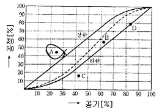
- A : 공사기간 25% 시점이다.
- B : 예정공정보다 실적공정이 훨씬 진척되어 있다.
- C : 경제적 시공이 되고 있다.
- D : 공정진척률(기성고)는 43% 정도이다.
(정답률: 75%)
57. 다음 수중 콘크리트의 설명 중 ( )에 알맞은 것은 무엇인가?
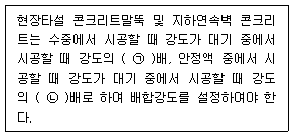
- ㉠ 0.8, ㉡ 0.7
- ㉠ 0.7, ㉡ 0.8
- ㉠ 0.7, ㉡ 0.7
- ㉠ 0.6, ㉡ 0.9
(정답률: 59%)
58. 축척 1:5000의 지형도를 만들기 위해 축척 1:500의 지형도를 이용한다면 1:5000 지형도의 1도면에 필요한 1:500 지형도는 무엇인가?
- 10매
- 50매
- 100매
- 1000매
(정답률: 68%)
59. 다음 설명하는 입찰방식은 무엇인가?
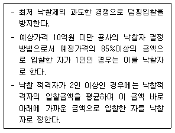
- 제한경쟁입찰
- 지명경쟁입찰
- 제한적평균가낙찰제
- 일반경쟁입찰
(정답률: 80%)
60. 그림과 같은 단순보에 사다리꼴 형태의 분포하중에 작용한다. 지점 A에서의 반력의 크기는 몇 kN인가?
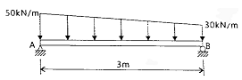
- 50
- 55
- 60
- 65
(정답률: 28%)
4과목: 조경관리
61. 다음 중 초화류의 월동관리 방법으로서 가장 적합하지 않는 것은 무엇인가?
- 보호막의 설치
- 가온
- 저온에서의 순화
- 성토
(정답률: 59%)
62. 잣나무 털녹병균의 담자포자에 대한 설명으로 옳은 것은?
- 중간기주에서 월동한다.
- 녹포자(銹胞子)가 발아하여 생성한다.
- 여름포자(夏胞子)가 발아하여 생성한다.
- 잣나무에 침입 후 균사상태로 월동한다.
(정답률: 44%)
63. 아황산가스(SO2)의 식물체 내 유입은 주로 어느 곳을 통하는가?
- 기공
- 책상조직
- 통도조직
- 해면조직
(정답률: 78%)
64. 식물체 안에서 질산의 환원에 필요한 미량 요소는 무엇인가?
- B
- Mn
- Mo
- Cl
(정답률: 35%)
65. 관리유형에 따른 적절한 레크레이션 이용의 강도와 특성을 조절하기 위한 관리기법 중 직접적 이용제한에 해당되는 것은 무엇인가?
- 캠프장 등 집중이용 장소의 증설과 같은 물리적 시설의 개조
- 저밀도 이용구역 등과 같은 정보를 이용자들에게 제공
- 일정한 입장료의 부과와 같은 자격요건의 부과
- 접근로에 있어서의 이용제한, 이용자수의 제한과 같은 이용강도의 제한
(정답률: 82%)
66. 식물병 중 표징을 관찰할 수 없는 경우는 무엇인가?
- 사과나무 탄저병
- 사철나무 그을음병
- 대추나무 빗자루병
- 포도나무 잿빛곰팡이병
(정답률: 64%)
67. 토양에서의 부식(腐植)의 기능으로 거리가 먼 것은 무엇인가?
- 입단화를 촉진한다.
- 보수력을 증대시킨다.
- 점토함량을 증가시킨다.
- 토양의 완충능을 증대시킨다.
(정답률: 61%)
68. 다음 능소화 수종관리 설명 중 바르지 않은 것은?
- 수술에는 갈고리가 있어 어린이가 놀다가 실명(失明)할 위험이 있어 어린이공원 주위에는 식재하지 않는다.
- 8~9월에 피는 나팔모양의 황색꽃은 개화기간이 길고 아름다워 관상가치가 높으므로 적소에 식재한다.
- 줄기에 홉반이 발달하였으므로 죽은 나무나 벽 등의 미관상 보완이 필요한 곳에 붙여 꽃의 아름다움을 감상할 수 있다.
- 산야(山野)에 자라는 반상록 덩굴성이고, 나무에 기어올라 아름다운 수형을 만든다.
(정답률: 53%)
69. 토양 중에 존재하는 수용성 수소이온 농도를 측정하여 얻을 수 있는 토양산성은 무엇인가?
- 잠산성
- 활산성
- 치환산성
- 가수산성
(정답률: 49%)
70. 다음 중 식물병의 예방법으로 부적당한 것은 무엇인가?
- 전염원의 제거
- 중간기주의 제거
- 외과수술
- 토양소독
(정답률: 75%)
71. 다음 중 점검시기에 따른 안전점검의 종류에 해당하지 않는 것은 무엇인가?
- 수시점검
- 임시점검
- 정기점검
- 특수점검
(정답률: 58%)
72. 배수시설의 점검 및 보수에 관한 지침 사항으로 가장 적합하지 않는 것은 무엇인가?
- 측구, 집수구, 맨홀 등의 토사 퇴적상태 점검
- 지하 배수시설의 물 빠지는 상태 점검
- 각 배수시설의 파손 및 결함 상태 점검
- 배수구멍이 파손된 곳은 동절기에 점검 수리
(정답률: 83%)
73. 농약의 사용목적에 따른 분류에 해당하는 것은 무엇인가?
- 유기인계
- 살응애제
- 호흡저해제
- 과립수화제
(정답률: 73%)
74. 말라치온(Malathion)에 대한 설명으로 바르지 않은 것은?
- 접촉독제이다.
- 적용대상의 범위가 넓다.
- 대표적인 고독성 약제이다.
- 선택성의 침투이행성약제이다.
(정답률: 53%)
75. 다음 중 조경관련 시설물의 유지관리에 관한 설명으로 부적합한 것은 무엇인가?
- 기반ㆍ편익ㆍ유희시설물관리, 설비관리, 건축물 관리공사를 포함한다.
- 기반ㆍ편익ㆍ유희시설 중 기반시설은 부분적으로 보수를 반복하거나, 내용(耐用)한도에 달했을 경우에는 전면적으로 교체 또는 개조를 행한다.
- 예방보전의 청소는 응급청소(연못, 분수의 물빼기 청소, 안내판, 포장면의 오물청소 등)와 상시청소(풀의 개장기간 전후의 청소 등)로 구분하여 시행한다.
- 배수처리시설은 기구의 보전과 방류수 또는 재 이용수로서 수질유지를 위해 측정, 검사하고 그 결과에 따라 유량이나 농도를 조정하여야 한다.
(정답률: 70%)
76. 연간평균근로자수가 400명인 사업장에서 연간 2건의 재해로 인하여 4명의 재해자가 발생하였다. 근로자가 1일 9시간씩 연간 300일을 근무하였을 때 이 사업자의 연천인율은 약 얼마인가?
- 1.85
- 4.44
- 5.00
- 10.00
(정답률: 40%)
77. 참나무류에 치명적인 피해를 주는 참나무 시들음병을 매개하는 곤충은 무엇인가?
- 광릉긴나무좀
- 솔수염하늘소
- 북방수염하늘소
- 털두꺼비하늘소
(정답률: 74%)
78. 공원에서 사고가 발생하였을 때 사고처리 절차 중 올바른 것은?
- 사고발생 통보→사고자 응급처리→병원호송→관계자 통보→사고 상황 파악
- 사고발생 통보→사고 상황 파악→사고자 응급처치→병원호송→관계자 통보
- 사고발생 통보→관계자 통보→사고자 응급처치→병원호송→사고 상황 파악
- 사고발생 통보→사고 상황 파악→관계자 통보→사고자 응급처치→병원호송
(정답률: 80%)
79. 시멘트 콘크리트 포장의 파손 원인 중 콘크리트, 슬래브 자체의 결함에 따른 원인에 해당되는 것은 무엇인가?
- 지지력 부족에 의한 균열 및 침하 발생
- 배수시설 불충분으로 노상을 연약화할 경우 발생
- 겨울철에 동결융해로 인하여 지지력이 부족할 경우 발생
- 슬립바(slipbar), 타이바(tiebar)를 사용하지 않았기 때문에 균열 발생
(정답률: 72%)
80. 다음 중 조경수목과 시설물의 유지관리 계획 수립에 필요 하지 않은 것은 무엇인가?
- 식물의 생장, 기상 상태조사
- 이용자 행태별 조사
- 시설물 훼손방지를 위한 이용제한
- 관리대상의 종류 조사
(정답률: 45%)
따라서 정답은 없습니다.